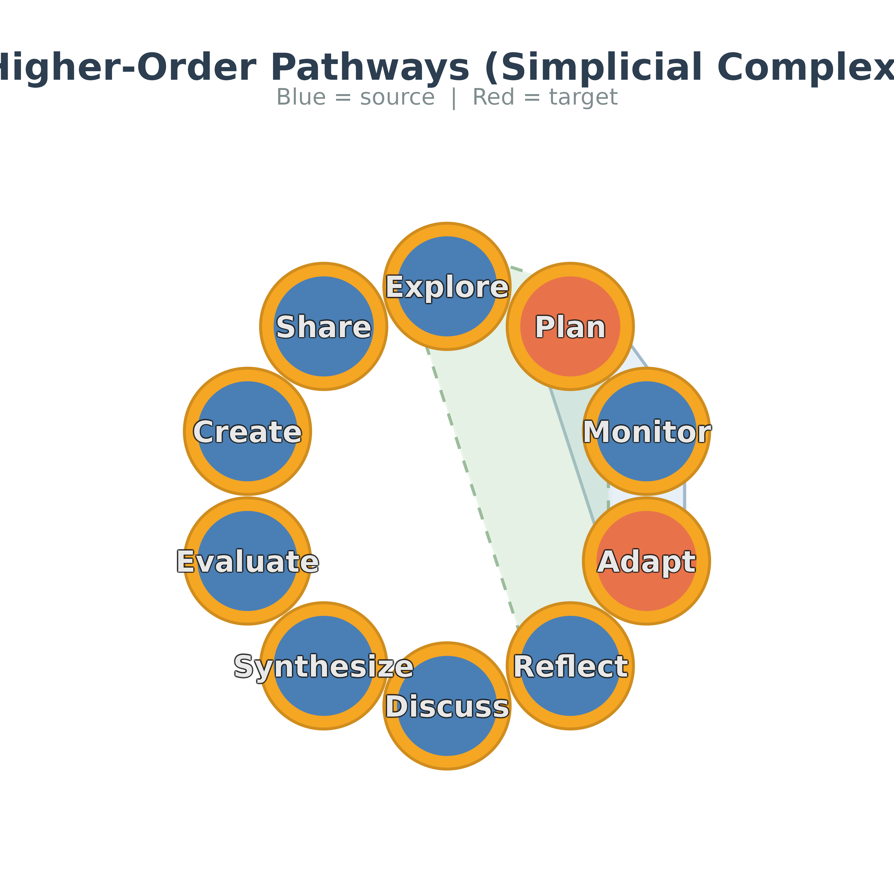

Visualizes higher-order pathways as smooth blobs overlaid on a network
layout. Source nodes are filled with node_color (blue by default)
and target nodes with target_color (orange by default).
Usage
plot_simplicial(
x = NULL,
pathways = NULL,
method = "hon",
max_pathways = 10L,
pathway_index = NULL,
anomaly = c("all", "over", "under"),
layout = "circle",
labels = NULL,
node_color = "#4A7FB5",
target_color = "#E8734A",
ring_color = "#F5A623",
node_size = 22,
label_size = 5,
label_color = "#e8e8e8",
target_label_color = NULL,
label_halo = TRUE,
label_halo_color = NULL,
label_halo_width = 0.035,
label_halo_alpha = 0.6,
blob_alpha = 0.25,
blob_colors = NULL,
blob_linetype = NULL,
blob_linewidth = 0.7,
blob_line_alpha = 0.8,
shadow = TRUE,
title = NULL,
dismantled = FALSE,
ncol = NULL,
ordered = NULL,
direction = NULL,
direction_cues = c("shade", "ring", "arrows"),
node_radius = NULL,
legend = NULL,
...
)Arguments
- x
A network object:
tna,netobject, matrix,igraph,cograph_network,net_hon,net_hypa,net_association_rules,net_link_predictionorsimplicial_complex. A data frame with apathcolumn is used aspathways, and the states are then taken from the path strings.- pathways
Character vector of pathway strings, a list of character vectors, a
net_hon,net_hypa,net_association_rules,net_link_predictionorsimplicial_complexobject, or a data frame with apathcolumn, such as the output ofNestimate::mogen_transitions(). Accepted string forms are"A B -> C","A -> B -> C","A, B, C","A - B - C"and"A B C", and the last state is the target. The rows of a data frame with acountcolumn are sorted by count in decreasing order beforemax_pathwaysis applied. WhenNULLandxis a model with sequence data, pathways are built withmethod.- method
Pathway source when building from a
tnaornetobject:"hon"(default) for a higher-order network,"hypa"for paths that are anomalous under a hypergeometric null model, or"rules"for association-rule itemsets fromNestimate::association_rules(), which are plotted as sets.- max_pathways
Maximum number of pathways to display. HON pathways are ranked by count and HYPA pathways by anomaly ratio.
NULLshows all. Default10.- pathway_index
Optional positive integer vector selecting ranked pathways before
max_pathwaysis applied. For example,2plots the second-ranked pathway and2:4plots the pathways ranked second through fourth.- anomaly
HYPA anomaly type to display, one of
"all"(default),"over"or"under". It applies to anet_hypainput and tomethod = "hypa". For any other input an explicitly supplied value is ignored with a warning.- layout
"circle"(default) or a coordinate matrix with one row per state.- labels
Display labels.
NULLuses state names.- node_color
Source node fill color.
- target_color
Target node fill color.
- ring_color
Donut ring color.
- node_size
Node point size.
- label_size
Label text size.
- label_color
Label text color for source and target nodes. Default
"#e8e8e8", a very light grey.- target_label_color
Target-node label color.
NULL(default) useslabel_color.- label_halo
Logical. Place a contrasting halo behind each label so that it stays readable on node, blob and background fills. Default
TRUE.- label_halo_color
Halo color.
NULL(default) chooses black or white from the luminance oflabel_color.- label_halo_width
Halo thickness in plot units. Default
0.035. A value of0removes the halo.- label_halo_alpha
Halo opacity, from 0 to 1. Default
0.6.- blob_alpha
Blob fill transparency.
- blob_colors
Blob fill colors (recycled).
- blob_linetype
Blob border line styles (recycled).
- blob_linewidth
Blob border line width.
- blob_line_alpha
Blob border line transparency.
- shadow
Add soft drop shadows?
- title
Plot title of the combined overlay.
- dismantled
If
TRUE, one panel per pathway arranged in a grid.- ncol
Number of columns in the grid when
dismantled = TRUE.NULL(default) uses the ceiling of the square root of the number of pathways.- ordered
Logical.
TRUEtreats each pathway as a path whose last state is the target.FALSEtreats it as a set of equal members, so no node getstarget_color, no direction cue is shown and the panel title lists the members.NULL(default) treatsnet_association_rules,simplicial_complexandmethod = "rules"pathways as sets and all other inputs as paths.- direction
Logical. Show the order of traversal in each per-pathway panel by a light-to-dark shading of the node cores along the path, a ring whose
ring_coloris strongest on the side facing the next state, and an arrowhead pointing to the successor.NULL(default) enables it whendismantled = TRUE.direction = TRUEwithdismantled = FALSEraises acograph_direction_needs_panelserror, because a state shared by several pathways in the overlay has no single successor. Direction is turned off for sets and whentarget_colorequalsnode_color.- direction_cues
Which direction cues to show, any of
"shade","ring"and"arrows". Default all three.- node_radius
Node core radius in data units, used in panels that show direction.
NULL(default) scales it to the panel extent.- legend
Add a legend strip beneath a dismantled grid.
NULL(default) adds it whendirectionis on.- ...
Additional arguments passed to
Nestimate::build_hon(),Nestimate::build_hypa()orNestimate::association_rules()when pathways are built from a model.
Value
Invisibly, a ggplot object for the combined overlay. With
dismantled = TRUE the arranged grid is returned instead, as a
gtable when gridExtra is available and otherwise as a list of
the per-pathway ggplot objects. NULL is returned, with a
message, when no pathways could be extracted. The figure is printed as a
side effect.
Details
When x is a tna or netobject model with sequence data
and pathways is NULL, the pathways are built from the
sequences with the Nestimate package. Pathways passed as
net_hon or net_hypa objects have their numeric state
identifiers translated to labels when x is a tna or
netobject.
Examples
plot_simplicial(regulation_net, c("Plan Monitor -> Adapt", "Explore Reflect -> Plan"))
